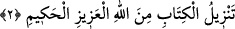
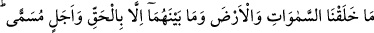
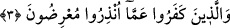

2. Bu Kitap aziz ve hakîm olan Allah tarafından indirilmiştir.
“Kitâbın”, bu sûreye ve diğer sûrelere şâmil olan Kur’ân’ın “indirilişi azîz, hakîm
olan Allah tarafındandır.” Allah tarafından olan ise hak ve doğrudur. Allah’tan daha
doğru sözlü kim olabilir ki? Azîz olan, Allah tarafından olan, gerek nazmı ve gerek
mânâları bakımından, diğer bütün kitaplara azîz ve gâliptir. Bu zâhir ve bâtın erbabına
açık bir delildir. Hâkim olan Allah tarafından gelen şeyde hikmetler vardır. Çünkü
Allah hikmetsiz ve maslahatsız iş yapmaz.
Yâni bu sûreye ve diğer sûrelere şamil olan Kur’ân “Allah tarafındandır.” Bir biri
ardına kitap göndermek Allah tarafındandır. Allah tarafından olan hak ve doğrudur. Zira
Allah Teâlâ “Allah’tan daha doğru sözlü kim olabilir ki?” (Nisa, 4/122)
buyurmaktadır.
3. Gökleri, yeri ve ikisi arasında bulunanları biz, şüphesiz yerli yerince ve belli bir
süre için yarattık. İnkâr edenler, uyarıldıkları şeylerden yüz çevirmektedirler.
“Biz gökleri, yeri ve” göklerde ve yerde olanları, bunlardan birer parça olmaları ve
bu cüz’îlerin göklerde ve yerde bulunmaları bakımından “ikisi arasında bulunanları”,
ateş, hava, bulut, yağmur, çeşitli kuşlar ve benzerlerini “ancak gerçek ile” doğru bir
hedefe, maksada ve yüce bir hikmete “ve belli bir süreye” yâni herkesin işinin nihâî
olarak varacağı kıyâmet gününe “göre yarattık.”
“İnkâr edenler”, Mekke müşrikleri, kıyâmet gününe ve onun dehşetli hallerine îmân
ve amel ile hazırlanmayı terk ederek “uyarıldıkları şeyden yüz çevirmektedirler.”
İşte Allah, yeri, mükelleflerin amel etmeleri için bir karargâh yaptı ve onlara kıyâmet
günü yaptıklarının karşılığını verecektir. Abes ve bâtıl bir şey yoktur. Var olan her şeyin
bir varlık hikmeti de vardır. Bütün varlık âlemi hepsi Allah’ın kelimâtıdır.
Her kelimenin bir dış yüzü vardır ki sûretidir. Ve iç yüzü vardır ki mânâdır. Bu durum
böyle derinlemesine yedi bâtın devam eder.
Haberde şöyle gelmiştir: Her hakkın bir hakikati vardır. Varlığın hepsi haktır. Hatta
hiç mânâsı olmayan bir takım kelimeler konuşmak bile haktır. Yâni vardır, mevcuttur.
Burada bâtıl olan, bu lüzumsuz kelimelerin altında bulunan mânâdır. Meselâ Zeyd
ölmediği halde bir kişinin “Zeyd öldü” demesi bu kabildendir. Zira bu kelimenin
harfleri haktır. Çünkü kelime vardır, mevcuddur. Burada bâtıl olan henüz ölmediği halde
“Zeyd öldü” denilmesidir. İşte bu, söylenen sözün altında bulunan mânâdır.
Buna göre dünya haktır. Hakikati ise âhirettir. Berzah/kabir âlemi dünya ile âhiret